이 글은 전체 2편 중 1편입니다. 긴 영상을 주제 흐름에 맞춰 나누어 정리했습니다.
채널: AI Frontier Korea (노정석) | 길이: 58:05 | 날짜: 2026년 6월 29일
이 글은 전체 2편 중 1편입니다.
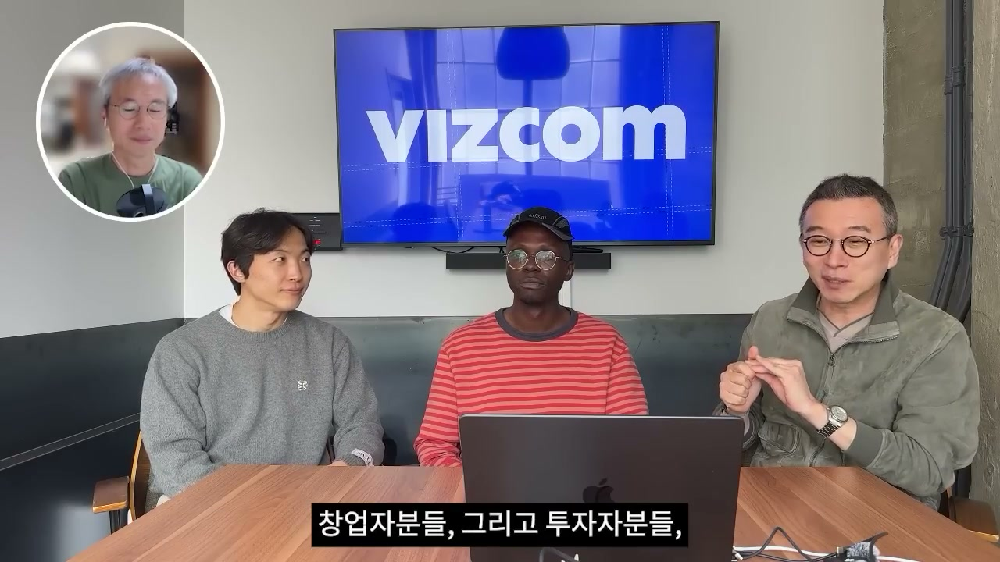
녹화 시점은 2026년 6월 15일 오후이며, 노정석은 당시 샌프란시스코에 있었다. 그는 한국보다 시간이 조금 늦다고 설명하면서, 서울에 있는 승준, 그리고 AI Frontier Korea에 여러 번 출연했던 김민석과 함께 VIZCOM 창업자 Jordan Taylor를 초대했다고 말한다. 이 대화는 단순한 회사 인터뷰라기보다, 샌프란시스코와 서울, 나아가 중국의 프런티어 AI까지 연결하고 싶다는 문제의식에서 출발한다.
노정석은 김민석의 권유로 약 열흘 전 베이 에어리어에 왔다고 설명한다. 김민석은 이곳 창업자들이 매우 흥미로운 일을 많이 하고 있고, 분위기가 뜨겁고, 바이올로지 분야에서도 최전선 사람들이 많으니 만나보면 좋겠다고 제안했다. 그 결과 노정석은 지난 열흘 동안 프런티어 랩 연구자, 20~21세의 젊은 창업자, 투자자, 큰 회사 관계자까지 폭넓게 만났다. 미디어 규정 때문에 모두를 공개적으로 다룰 수는 없지만, 차차 소개하겠다고 예고한다.
그 첫 번째 순서가 VIZCOM의 Jordan Taylor다. Jordan은 간단히 한국어로 “저는 Jordan입니다. 저는 VIZCOM 창업자입니다”라고 인사한다. 노정석은 Jordan이 한국어를 조금 하지만 완전히 편한 것은 아니므로, 오늘 대화는 영어 중심으로 진행하되 중간중간 한국어도 섞일 것이라고 안내한다. 이 초반 구성은 VIZCOM을 단순한 미국 스타트업 사례가 아니라, 한국과 실리콘밸리를 잇는 사례로 배치한다.
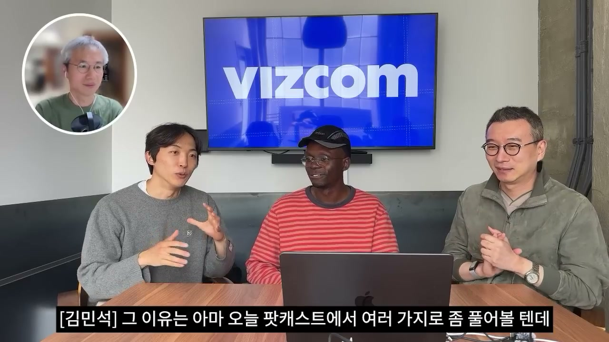
김민석은 샌프란시스코가 AI 스타트업, 프런티어 랩, 투자자들이 좁은 지역 안에 집중되어 있는 독특한 공간이라고 설명한다. 그는 한두 달 넘게 이곳에서 지내며 재미있는 창업자와 친구들을 많이 만났고, 그 이야기를 노정석에게 전했다. 이 팟캐스트에서도 가능하다면 그런 사람들을 소개하고 싶었고, 그중 가장 먼저 소개하고 싶었던 사람이 Jordan이었다.
Jordan을 강하게 추천한 이유는 여러 겹이다. 첫째, Jordan은 웬만한 한국계 미국인만큼 한국어를 하면서 한국 문화를 깊이 이해하고 있다. 둘째, VIZCOM이라는 AI 제품 회사를 매출과 제품 양쪽에서 잘 키워가고 있다. 셋째, 한국 청중에게 전달할 만한 창업자 관점과 제품 철학을 갖고 있다. 노정석도 Jordan이 베이 에어리어에서 만난 사람 중 가장 재미있고 인상적인 인물 중 하나였다고 말하며, 김민석에게도 가장 먼저 배경을 물어보자고 한다.
이 구간은 인터뷰의 정당성을 만든다. Jordan은 단순히 “800억 투자받은 회사의 창업자”가 아니라, 한국 문화와 실리콘밸리 제품 빌딩을 동시에 이해하는 인물로 소개된다. 그래서 이후 대화는 VIZCOM의 기술, 제품, 조직, 커뮤니티뿐 아니라 한국 인재와 글로벌 시장 사이의 간극까지 확장된다.
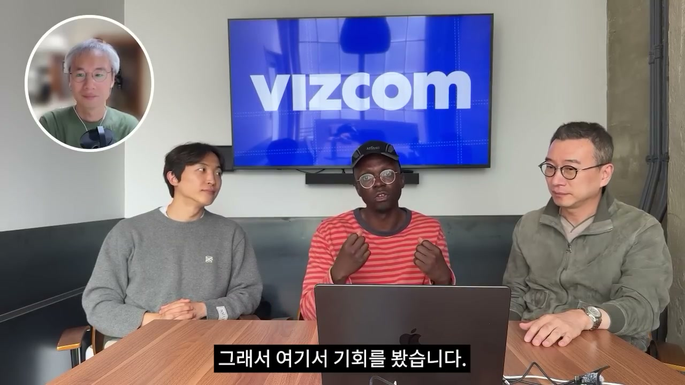
Jordan은 자신의 배경을 산업디자인으로 설명한다. 그는 한국 홍익대학교에서 산업디자인을 공부했고, 이후 미국으로 돌아가 Honda에서 자동차 디자인을 했다. Honda에서의 일은 자동차를 그리고, 자동차를 렌더링하고, Photoshop에서 손으로 작업하는 것이었다. 그는 이 경험을 통해 자신의 재능을 다른 곳에 써야 할지도 모른다고 느꼈다.
이후 Jordan은 NVIDIA로 이동했다. NVIDIA에서 그는 당시 최첨단 기술이었던 합성곱 신경망, GAN, 초기 이미지 생성 기술을 접했다. 이미지가 생성될 수 있다는 아주 초기 신호가 보이던 시기였고, 지금 기준으로는 원시적이지만 당시에는 매우 새로운 기술이었다. Jordan은 이 흐름을 보며, 이런 모델들이 발전하면 자신의 작업 방식 자체를 근본적으로 바꿀 것이라고 판단했다.
핵심 문제의식은 창작자가 실제로 창의적인 일을 하기보다, 렌더링과 반복 시각화 같은 고충에 너무 많은 시간을 쓰고 있다는 점이었다. 자동차 디자인 세계에서 출발한 그는 “이 기술이 그런 고충을 해결할 수 있다”는 기회를 봤다. 이후 관련 내용을 Reddit에 올렸고, 그 글이 크게 입소문을 타면서 회사를 전업으로 해야겠다는 확신을 얻었다. 당시 그는 약 8개월치 저축이 있었고, 초등학교 5학년 때부터 알던 친구와 함께 VIZCOM을 만들기 시작했다.
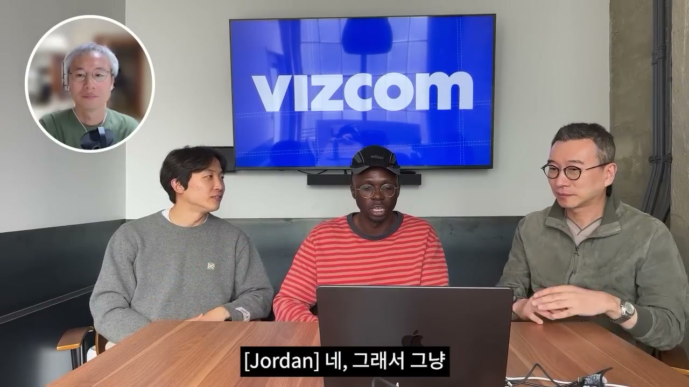
노정석은 회사 설립을 2020년으로 짚었지만, Jordan은 2021년, 코로나가 막 시작되던 때라고 정정한다. 노정석은 그 시기가 GPT-3가 있던 때였고, 언어 모델은 아직 지금처럼 완벽하지 않았지만 이미지 쪽에는 실험 공간이 많았다고 정리한다. Jordan은 DALL-E가 2021년 무렵 나왔고, 그 전에는 Disco Diffusion이 있었으며, Stable Diffusion도 그 흐름의 전후에 등장했다고 설명한다.
김민석은 Reddit 게시글이 어떤 내용이었고 어떤 반응을 얻었는지 묻는다. Jordan은 자신이 혼자 앱을 만들고 Reddit에 “여러분의 스케치를 렌더링해주는 웹 앱을 만들었다”는 취지로 올렸다고 말한다. 그는 직접 만들었다는 점을 강조했고, 그 뒤 잠들었다. 아침에 일어나 보니 수천 개 추천이 올라와 있었고, 사람들이 “멋지다”, “어떻게 써볼 수 있나”라고 반응했다.
이 순간은 Jordan에게 전환점이었다. 그는 그날 아침 출근해야 했지만, “오늘은 회사에 못 간다고 해야겠다”고 생각하고 바로 작업에 들어갔다. NVIDIA는 매우 좋은 직장이었지만, 고객들이 실제로 원한다는 신호가 너무 강했다. 이 구간에서 VIZCOM의 출발은 투자자 설득이나 시장 분석보다, 사용자의 즉각적 열망을 확인한 경험에 가까웠다는 점이 드러난다.
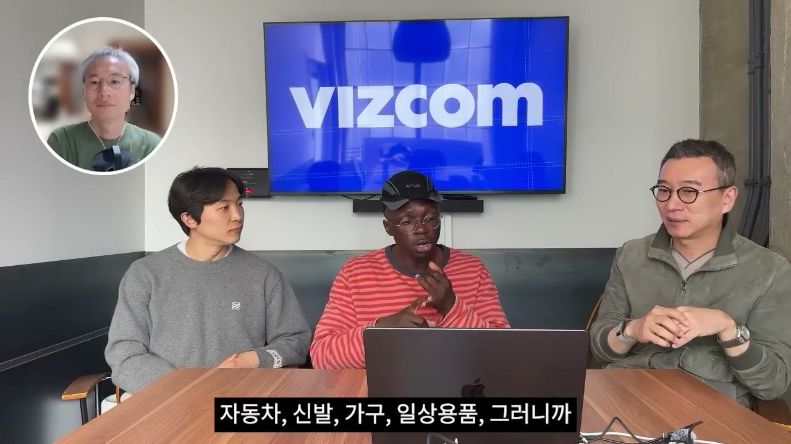
노정석은 Jordan의 창업 여정에 대해 묻고 싶지만, 그 전에 청중이 회사를 이해할 필요가 있으니 VIZCOM이 무엇을 하는지 소개해달라고 요청한다. Jordan은 사람들이 앉아 있는 의자조차 처음에는 그림이나 누군가의 아이디어로 시작했다고 말한다. 그는 이 과정을 “종이에서 생산으로 가는 과정”이라고 설명한다. 즉 어떤 제품이 그림이나 아이디어에서 시작해 현실 세계의 물건이 되는 전 과정을 뜻한다.
VIZCOM이 집중하는 부분은 바로 이 전환이다. 아이디어를 가진 디자이너들이 저작자이자 창작자로서 자신의 아이디어를 구현하고, 실제 손에 쥘 수 있는 형태로 가져가려면 무엇이 필요한가가 핵심 질문이다. VIZCOM은 이를 위한 도구 모음이며, 회사가 풀려는 문제도 여기에 있다. 주요 성과가 나타나는 분야는 자동차, 신발 디자인, 산업디자인, 가구, 일상용품처럼 물리적 세계와 맞닿은 영역이다.
노정석은 가장 자주 만들어지는 결과물이 자동차인지, 신발과 가방인지 묻는다. Jordan은 자동차, 신발, 가구, 집 주변의 일상용품 등을 언급한다. 다만 이 디자인들은 단순한 이미지 생성물이 아니라 많은 의도가 담긴 결과물이라고 강조한다. 이미 디자이너였거나 전문가가 되기를 지향하는 사람들이 만드는 것이기 때문에, 일반적인 이미지 놀이와는 다른 전문적 맥락을 갖는다.
이 구간에서 투자 규모도 언급된다. Jordan은 정확한 매출 숫자는 공유할 수 없지만, 지금까지 약 5,000만 달러를 유치했다고 말한다. 노정석은 이를 약 800억 원으로 환산하며 매우 큰 금액이라고 반응한다. 김민석은 VIZCOM이 많은 산업디자이너가 회사 안에서 자신의 역량을 확장하도록 돕는 제품이라고 정리한다.
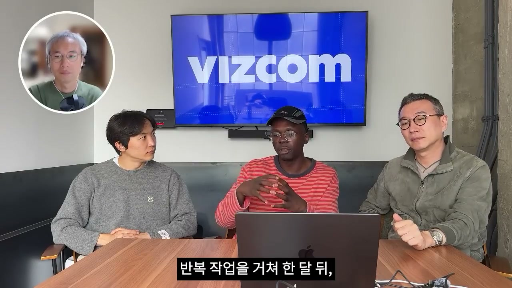
Jordan은 VIZCOM 이전에는 디자이너가 무언가를 그린 뒤 Photoshop에서 수작업으로 다듬고, 렌더링을 3D 소프트웨어에 넣는 방법까지 알아야 했으며, 이 과정에 시간이 매우 많이 걸렸다고 설명한다. VIZCOM이 가능하게 하는 것은 그가 즐겨 표현하듯 “더 빨리 실패할 수 있게 되는 것”이다. 이 말은 실패를 장려한다는 뜻이 아니라, 잘못된 방향을 훨씬 빨리 확인하고 다음 시도로 넘어갈 수 있게 한다는 뜻이다.
그는 프로그래머에게는 코드가 작동하는지 알려주는 컴파일러가 있다고 비유한다. 하지만 물리적 세계를 디자인하는 사람은 한 달 뒤 실제 시제품을 받아보기 전까지 그 아이디어가 전념할 만한지, 제대로 작동하는지 알 기회가 많지 않다. VIZCOM은 이 간극을 줄인다. 디자이너가 더 많은 아이디어를 탐색하게 할 뿐 아니라, 어떤 아이디어를 탐색하지 말아야 할지도 이해하게 해준다.
신발 예시는 특히 중요하다. 전통적으로는 신발을 디자인하고 반복 작업을 거쳐 한 달, 두 달 뒤에 시제품을 받는다. Jordan은 나중에 시각 자료도 보여주겠지만, 이제는 종이에서 시작해 같은 날 실제 3D 프린팅된 신발을 손에 쥘 수 있다고 말한다. 이는 아이디어 발상과 제품 개발 전반을 가속하는 변화다.
김민석은 이를 전통적 산업디자인의 반복 작업을 단축하고, 디자이너가 여러 방식을 파악한 뒤 회사에 가장 적합한 디자인을 찾도록 돕는 것으로 정리한다. 노정석은 ChatGPT와 Claude 시대에는 범용 모델도 많은 일을 할 수 있다고 지적한다. 그러면서 범용 프런티어 모델이 이미지와 3D 스케치에 가까운 작업을 할 수 있다면, 왜 VIZCOM을 선택해야 하는지 묻는다. 이 질문은 다음 구간의 핵심인 “미션이 해자다”로 이어진다.
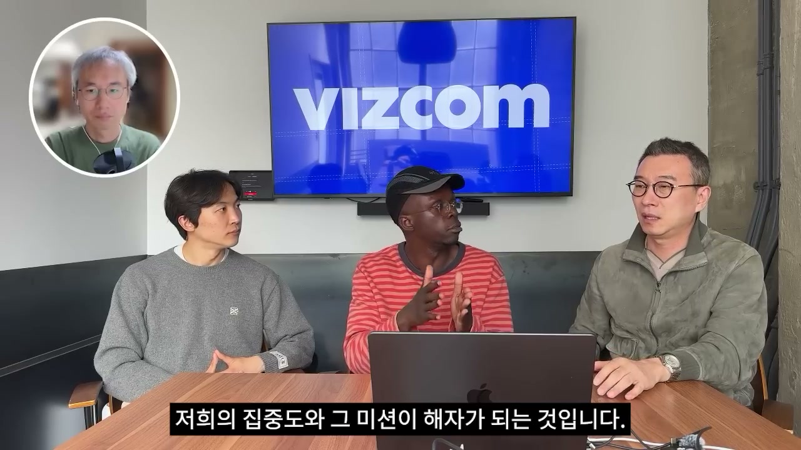
Jordan은 VIZCOM의 차별점을 단일 기능 이상의 문제로 설명한다. 핵심은 전체 과정을 소유한다는 생각이다. 아이디어가 있고, 그것을 실제로 손에 쥘 수 있게 하고 싶다는 과정 전체를 다룬다는 뜻이다. 여기서 VIZCOM의 미션은 해자가 된다.
“미션이 해자다”라는 말은 VIZCOM이 디자이너가 처음부터 끝까지 갈 수 있게 하려는 열망 자체가 회사에 집중력을 준다는 의미다. Jordan은 이 영역이 프런티어 연구소에는 너무 작을 수 있지만, 동시에 무시하기에는 너무 큰 영역이라고 본다. 이는 거대한 범용 AI 모델 회사가 모든 사용자의 세부 워크플로를 깊게 파고들기 어렵다는 판단과 연결된다. VIZCOM은 물리적 세계를 디자인하는 사람들에게 강하게 맞춰져 있고, 이상적 고객상에 매우 뚜렷하게 집중한다.
노정석은 이 문장이 마음에 든다고 반응한다. 큰 프런티어 모델이 유사 기능을 제공하더라도, VIZCOM은 커뮤니티로서 의미가 크다고 본다. Jordan도 커뮤니티는 정말 복제하기 어렵다고 말한다. 노정석은 VIZCOM의 미션이 Reddit 커뮤니티에서 시작된 셈이라고 연결하고, 김민석 역시 “미션이 해자다”라는 말이 창업자들에게 중요한 사고방식으로 다가온다고 말한다.
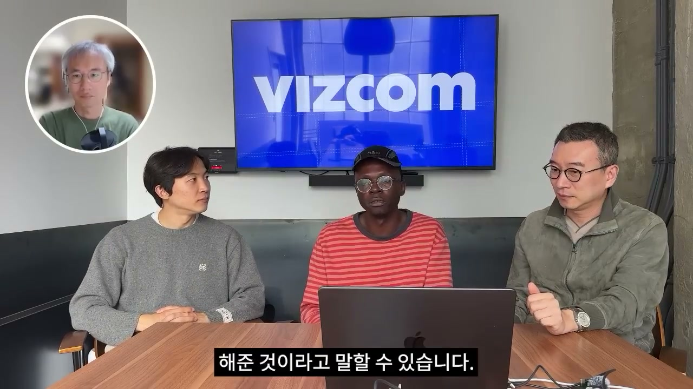
김민석은 Jordan이 처음부터 여러 경험을 했기 때문에 “mission is moat” 같은 관점이 형성된 것인지 묻는다. Jordan은 이 관점이 매우 개인적인 일에서 시작됐다고 답한다. 그는 늘 피하려고 했던 것이 “창업자가 되기 위해 무언가를 하는 것”이었다고 말한다. 회사를 시작하려고 한 적도 없고, 그것이 목표도 아니었다.
Jordan의 목표는 자신이 개인적으로 너무 많은 시간을 쓰고 있었고 짜증났던 문제를 해결하는 것이었다. 산업디자인 출신으로서 자신을 위한 도구를 만들고 있었고, 그 과정에서 관점이 생겼다. 자신이 직접 겪던 가까운 문제, 크고 실질적인 문제가 있었기 때문에 이 길로 이끌렸다는 설명이다. 이 지점에서 미션은 외부에 보여주기 위한 문구가 아니라 창업자 개인의 고통에서 나온 문제 정의다.
김민석은 founder로서 그 생각을 직원들에게 어떻게 전파하고, 회사와 워크플로를 어떻게 구조화하는지 묻는다. 노정석은 더 구체적으로 미션을 설명하는 문장, 즉 mission statement가 있느냐고 묻는다. Jordan은 이상하게 들릴 수 있지만 자신은 늘 “신이 만들지 않았다면, 언젠가는 우리 도구 중 하나가 만들었기를 바란다”고 말한다고 답한다. 그는 세상이 VIZCOM 도구의 가능성을 반영하기를 바라며, 매장에서 어떤 물건을 보고 “이거 VIZCOM으로 만든 거죠?”라고 말할 수 있는 상태를 상상한다.
그는 사람들이 다시 physical world에 흥미를 느끼게 하는 것이 중요하다고 본다. 우리는 하루 종일 화면을 보고, 많은 것이 너무 digital이 되었으며, digital world에서는 signal을 찾기가 어렵다. 그래서 다음 frontier의 질문은 “얼마나 realistic한가”가 아니라 “얼마나 real하게 만들 수 있는가”가 된다. 실제로 현실 세계에서 구현 가능한가가 새로운 신호가 된다는 주장이다.
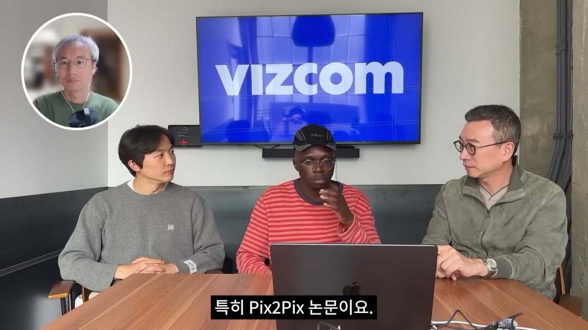
노정석은 과거로 돌아가 회사 초기의 기술 기반을 묻는다. 그는 2022년 무렵에는 ChatGPT도 GPT-4도 없었고, convolutional neural network, GAN, Stable Diffusion 전후의 흐름이 있었다고 정리한다. Jordan은 초기에는 convolutional neural net 일부를 사용했고, 특히 Pix2Pix 논문에서 큰 영감을 받았다고 답한다. 그는 Pix2Pix가 박태성의 논문이었고, 박태성이 KAIST 출신이라고 설명한다.
Jordan은 박태성과 물리적으로 가까운 곳에 앉았거나 근처에 있었던 기억을 이야기한다. 점심시간에 가끔 그를 봤지만, 인사하기에는 항상 긴장됐다고 말한다. 그래서 손만 흔들곤 했고, “나중에 같이 먹자”고 말하고 싶었지만 잘 되지 않았다는 식의 개인적 에피소드도 덧붙인다. 이 가벼운 회상은 Pix2Pix가 단순한 논문명이 아니라 Jordan에게 실제 사람과 연결된 기술적 영감이었다는 점을 보여준다.
당시 BERT도 언급된다. Jordan은 BERT가 그때 가장 큰 language model처럼 느껴졌고 매우 미래적으로 보였지만, 지금은 너무 오래된 기술처럼 느껴진다고 말한다. 이는 AI 기술의 시간감각이 얼마나 빠르게 변했는지를 보여준다. 최승준은 Pix2Pix가 ControlNet의 전신 같은 것인지 묻고, Jordan은 정확하다고 답한다. 다만 ControlNet이 하려던 일을 다른 패러다임에서 한 것이라고 설명한다.
노정석은 Pix2Pix가 처음 활용한 기술이었는지 확인하고, 시간이 지나며 기술이 어떻게 전환됐는지 묻는다. Jordan은 Pix2Pix가 VIZCOM 미션에 가장 잘 맞는 기본 기술이었다고 말한다. 이유는 드로잉을 사용하는 기술이었고, VIZCOM 사용자들은 이미 그림을 그릴 줄 알았기 때문이다. 사용자의 드로잉 능력이 모델의 많은 부족한 부분을 보완해주었다.
이후 자연스럽게 Disco Diffusion이 등장했다. 사람들은 text-based diffusion, 즉 텍스트를 사용해 이미지 생성 과정을 guide할 수 있다는 점을 깨닫기 시작했다. Jordan은 단어만으로 사실상 이미지를 만들 수 있다는 사실이 당시에는 말도 안 되게 놀라웠다고 회상한다. 2022년 무렵 이런 변화가 나타났고, Stable Diffusion 1.5가 등장하면서 모든 것이 바뀌었다고 말한다.
그 뒤 Flux, 여러 다른 모델, Stable Diffusion 2.5 등으로 흐름이 이어졌고, 모델 발전 속도는 점점 가속됐다. 매주 새로운 모델이 나오는 느낌이었다. 노정석은 지금도 제품이 Stable Diffusion에 의존하는지, 아니면 현대적 모델로 전환 중인지 묻는다. Jordan은 지금은 모든 것을 섞어 쓴다고 답한다. 각각의 모델에는 특별한 case와 용도가 있기 때문이다.
중요한 관점은 “얼마나 오래된 기술인가”가 유용성 판단 기준이 되어서는 안 된다는 것이다. 사람들은 최신 기술에 사로잡혀 최신이면 더 좋을 것이라고 생각하지만, 오래된 기술도 여전히 현대적 제품 안에서 자리가 있다. VIZCOM도 어떤 영역에서는 여전히 오래된 접근을 사용한다. 기준은 최신성 자체가 아니라, 그 맥락에서 가장 적합한가이다.
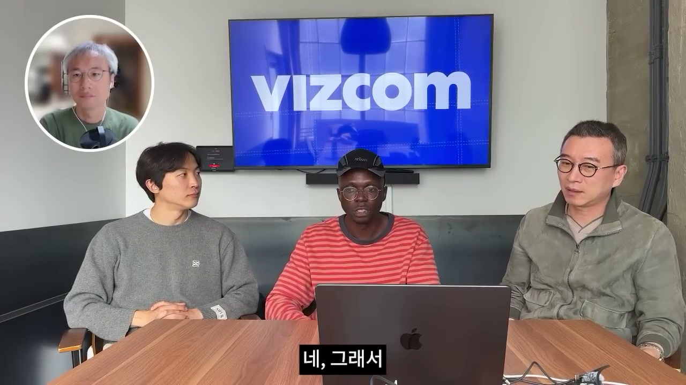
김민석은 기술에만 집중하면 안 되고 결국 최고의 제품으로 고객을 만족시켜야 한다며, Jordan이 기술과 제품 사이의 균형을 어떻게 유지하는지 묻는다. 특히 팀원들이 제품을 실제로 dogfood하도록 어떻게 돕는지도 질문한다. Jordan은 많은 사람들이 기술에서 출발한 뒤 문제를 찾는 함정에 빠진다고 말한다. 그러나 사실은 문제에서 출발해야 한다.
그의 방식은 먼저 “우리가 여기서 정말 해결하려는 것이 무엇인가”라는 페인 포인트를 정의하는 것이다. 그런 다음 “어떤 기술이 이 문제를 해결할 수 있을까”라고 묻는다. 이렇게 해야 기술 과잉이나 최신 모델 추종의 함정을 어느 정도 피할 수 있다. 이는 앞서 말한 “최신이 항상 더 좋은 것은 아니다”라는 기술관과 직접 연결된다.
VIZCOM은 내부에 실제 디자이너를 채용함으로써 이 균형을 제도화했다. 자동차 디자이너와 신발 디자이너들이 회사 안에서 일하고, 그들이 실제로 VIZCOM 툴을 테스트한다. 제품이 실제 생산에 들어가기 전에 고객 역할을 하는 사람들이 내부에서 검증하는 구조다. Jordan은 이를 “고객을 내부에 채용함으로써 제품을 직접 써보며 검증한다”고 설명한다.
최승준은 이 맥락에서 디자인 부채를 묻는다. 탐색 공간과 잠재 공간이 넓어지면 사람은 취향을 가지고 무언가를 골라야 하는데, 그 압도감은 어떻게 다루는지 질문한다. 이는 AI가 결과를 무한히 만들 수 있는 시대의 새로운 제품 문제다. Jordan은 너무 많은 것을 만들 수 있다는 사실 자체가 새로운 문제가 된다고 인정한다.
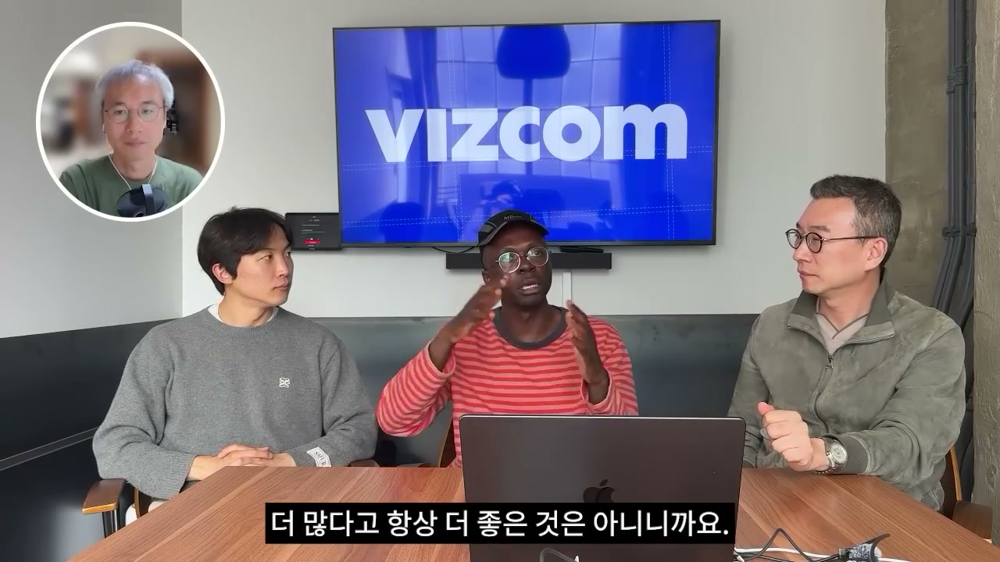
Jordan은 디자인에도 결과물이 너무 많아지는 문제가 있지만, 코드 생성만큼 심각하지는 않다고 본다. 왜냐하면 디자인에서는 결국 “보는 눈”의 문제가 더 커지기 때문이다. 무엇이 중요한지 알아보는 능력은 디자이너에게 달려 있다. 그는 그 선택을 디자이너에게 기대는 것이 좋은 일이라고 말한다.
그는 기계가 항상 무엇이 좋아 보이는지 말해주는 상황을 원하지 않는다. 음식이 왜 특정한 맛을 내는지, 음악이 왜 특정하게 들리는지에는 매우 인간적인 무언가가 있다. 그것은 사람의 영역이다. 그래서 VIZCOM은 디자이너가 선택하고 판단하는 부분을 남겨두려 한다.
Jordan은 도구가 슬롯머신처럼 느껴지지 않고 실제 도구처럼 느껴지는 것이 중요하다고 말한다. 사용자가 통제하고 있고, 자신이 어떤 일을 하는 데에는 이유가 있다는 감각을 가져야 한다. 그래야 너무 많은 쓸모없는 결과물을 만드는 일을 줄일 수 있다. 더 많다고 항상 더 좋은 것은 아니며, 때로는 작은 작업들의 질적 성격이 더 중요하다.
최승준은 다시 도그푸딩을 위해 디자이너를 위한 스캐폴딩 도구를 만든 적이 있느냐고 묻는다. Jordan은 너무 새로운 문제라 VIZCOM도 아직 탐색 중이라고 답한다. 현재로서는 결과물이 의도와 맞는지 확인하는 것이 핵심 문제이며, 많은 결과물을 만들게 되는 이유도 처음 다섯 번이나 열 번 안에 제대로 맞지 않기 때문이라고 설명한다. 이 문제는 계속 고민 중인, 정말 새로운 개념으로 제시된다.
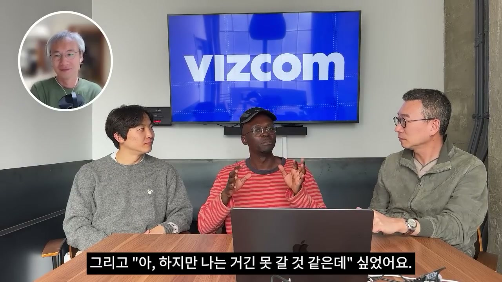
노정석은 Matthew와 자신이 Jordan을 밸리 첫 게스트로 선택한 이유 중 하나가 한국과 미국 사이의 강한 연결점이라고 말한다. 그래서 무엇이 Jordan을 한국으로 이끌었는지, 한국에서의 삶은 어땠는지 묻는다. Jordan은 고등학교 때 KAIST 이야기를 친구에게 들었다고 회상한다. KAIST를 찾아보고 한국의 Stanford 같은 곳이라고 느꼈지만, 자신은 거기에 못 갈 것 같다고 생각했다.
그는 디자인을 항상 좋아했다. 한국의 디자인 학교라면 홍익대학교라고 생각했고, 처음에는 미국 CCS에서 디자인 학교를 조금 다녔다. 그곳에는 한국에서 온 유학생들이 많았고, Jordan은 그들의 디자인 실력을 보고 매우 놀랐다. “디자인을 어떻게 저렇게 잘하지?”라는 의문이 들었고, 그 친구들이 한국에서 학원을 다녔다는 이야기를 듣고 한국에 진짜 가봐야겠다고 생각했다.
결국 그는 한국으로 갔고, 그대로 머물렀다. 신사동, 잠실, 강남에서 살았고, 홍익대학교에서 산업디자인을 공부했다. 시간이 지나며 한국어를 배웠고, 친구도 많이 생겨 지금까지도 한국 친구들이 있다고 말한다. 이 개인사는 VIZCOM의 한국 연결성이 겉치레가 아니라 실제 생활과 교육 경험에서 나온 것임을 보여준다.
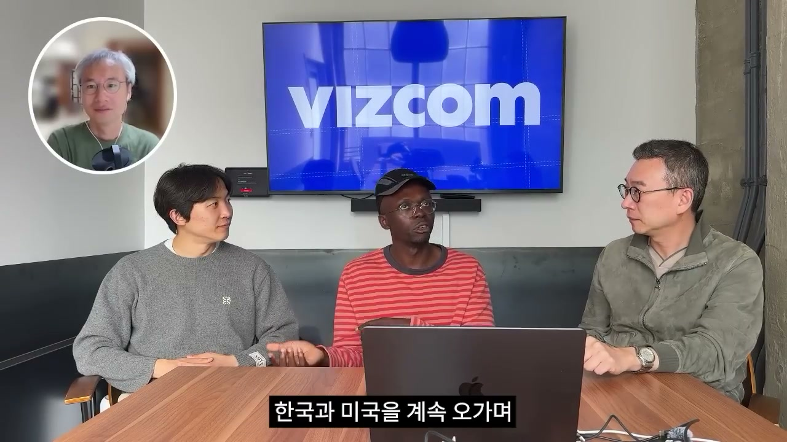
Jordan은 한국에서 살았을 때 정말 재미있었다고 말한다. 특히 순대를 매우 좋아했고, 한국 음식 문화 전반이 좋았다고 반복해서 언급한다. 시간이 갈수록 그는 한국식 사고방식에 익숙해졌고, 한국 엔지니어들이 얼마나 뛰어난지도 이해하게 되었다. 특히 일하는 방식과 직업윤리가 자신에게 매우 특별하게 느껴졌다고 설명한다.
미국으로 돌아왔을 때 그는 “여기에는 간극이 있네”라고 생각했다. 한국에는 똑똑하고 열심히 일하며 뛰어난 사람들이 많은데, 왜 그 사람들이 한국에만 머무르는지 의문을 느꼈다. 그러다 KAIST 출신의 국제적인 인물인 박태성을 알게 되었고, 한국과 미국을 오가며 만들고 친구를 사귀는 일이 자연스러운 흐름이 되었다. 이 경험이 그에게 한국과 미국 사이의 연결 가능성을 체감하게 했다.
노정석과 김민석은 이 간극을 더 명확히 묻는다. 한국 사람들이 똑똑하고 열심히 일하고 좋은 직업윤리를 갖고 있다면, 실제로 그들이 가진 장벽은 무엇인가. Jordan은 한국에서 유학생으로 지내며 자신도 그 느낌을 이해하게 되었다고 말한다. 그는 이후 이 장벽을 정보의 문제이자 자신감의 문제로 설명한다.
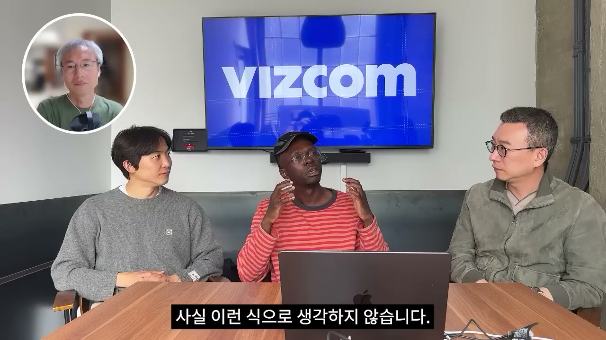
Jordan은 한국 인재들의 장벽이 단지 정보 부족만은 아니라고 본다. 때로는 자신이 실제로 그것을 할 수 있다는 자신감의 문제이기도 하다. “실리콘밸리가 뭐지?”, “캘리포니아가 뭐길래 거기까지 가야 하지?”, “그냥 여기서 하면 되잖아”라고 생각할 수 있지만, 그는 열린 마음을 갖고 다른 맥락으로 나가보는 것이 중요하다고 말한다. 자신이 할 수 있는 일이 다른 맥락에서는 정말 특별하다는 것을 이해할 필요가 있다는 것이다.
한국은 작고 경쟁이 매우 치열하다. 모두가 정말 똑똑하고, 매우 똑똑하기 때문에 경쟁이 엄청나다. 이런 환경에서는 자신의 방식이 특별하다는 감각을 갖기 어렵다. 하지만 캘리포니아나 미국처럼 더 큰 공간에 오면, “여기에는 나눌 것이 정말 많고, 내가 일에 접근하는 방식이 굉장히 독특하구나”라고 깨달을 수 있다.
Jordan은 많은 서구권 사람들, 예를 들어 미국인들도 사실 관점이 좁은 경우가 많다고 말한다. 미국에는 여권도 없고 멀리 여행해본 적도 없는 사람들이 많다. 그래서 한국인이 새로운 관점, 특히 전통적이지 않은 관점을 가지고 들어오는 순간 오히려 더 높이 평가받을 수 있다. 그는 때로는 그냥 도약해보는 것이 필요하며, 자신의 친구들 중에도 그렇게 한 사람들이 있고, 노정석과 김민석의 세대도 그런 초기 사례일 수 있다고 말한다.
노정석은 이에 동의한다. 젊은 세대 한국인들은 대부분 영어를 완벽하게 하고, 자신감과 자기주장이 더 강하다고 말한다. 이는 Matthew와 자신 같은 세대보다 더 나아진 부분이라고 덧붙인다. 이 구간은 1편의 마지막 부분에서 VIZCOM 이야기를 한국 인재의 글로벌 확장 문제로 넓힌다.
“미션이 해자입니다.”
“디자이너들이 처음부터 끝까지 갈 수 있게 하려는 열망이 집중력을 줍니다.”
“더 빨리 실패할 수 있게 된 것입니다.”
“최신이라고 항상 더 좋은 것은 아닙니다.”
“문제에서 출발해야 합니다.”
“커뮤니티는 복제하기 어렵습니다.”
“더 많다고 항상 더 좋은 것은 아닙니다.”
“신이 만들지 않았다면, 언젠가는 우리 도구 중 하나가 만들었기를 바랍니다.”
“얼마나 realistic한가가 아니라, 얼마나 real하게 만들 수 있는가가 다음 질문입니다.”
“한국에는 나눌 것이 정말 많고, 일에 접근하는 방식이 독특합니다.”
이 1편의 핵심 메시지는 VIZCOM이 단순한 AI 이미지 생성 회사가 아니라, 산업디자이너의 실제 작업 흐름을 바꾸려는 제품 회사라는 점이다. Jordan은 자동차 디자인, Photoshop 수작업, 3D 렌더링, 시제품 대기라는 느린 과정을 직접 겪었고, 그 고통에서 출발해 도구를 만들었다. Reddit의 초기 반응은 시장의 신호였고, Pix2Pix와 diffusion 모델들은 그 문제를 해결하기 위한 수단이었다.
VIZCOM의 전략적 차별점은 “전체 과정을 소유한다”는 데 있다. 범용 모델이 비슷한 기능을 제공할 수 있어도, 물리적 세계를 디자인하는 전문가의 의도, 반복, 선택, 실제 제작 가능성까지 끝까지 다루는 것은 다른 문제다. 그래서 Jordan에게 해자는 모델 성능 하나가 아니라 미션, 커뮤니티, 이상적 고객에 대한 집중, 내부 디자이너 도그푸딩, 그리고 실제 제품 개발 사이클과의 밀착성이다.
창업 관점에서도 중요한 교훈이 있다. Jordan은 창업자가 되기 위해 창업하지 않았고, 자신이 겪는 문제를 해결하려고 했다. 기술에서 출발해 문제를 찾는 것이 아니라, 페인 포인트에서 출발해 적합한 기술을 고르는 방식이 VIZCOM의 제품 철학이다. 이 태도는 AI 모델이 빠르게 바뀌는 시대에 특히 중요하다. 최신 모델을 쫓는 것보다, 고객의 실제 작업 흐름에서 무엇이 맞는지 판단하는 능력이 더 큰 경쟁력이 된다.
마지막으로 이 1편은 한국 인재와 글로벌 무대의 관계를 중요한 부주제로 제시한다. Jordan은 한국의 디자인 교육, 엔지니어링 역량, 직업윤리를 높게 평가하면서도, 자신감과 더 큰 맥락으로 나가보는 경험이 필요하다고 말한다. 한국의 치열한 경쟁 안에서는 평범해 보이는 능력과 사고방식이, 실리콘밸리 같은 다른 맥락에서는 독특하고 강력한 관점이 될 수 있다. 2편에서는 이 대화가 VIZCOM의 조직, 성장, 글로벌 확장, 그리고 AI 디자인 시장의 미래로 더 이어질 것으로 보인다.
댓글
GitHub 이슈 기반 댓글 시스템입니다.